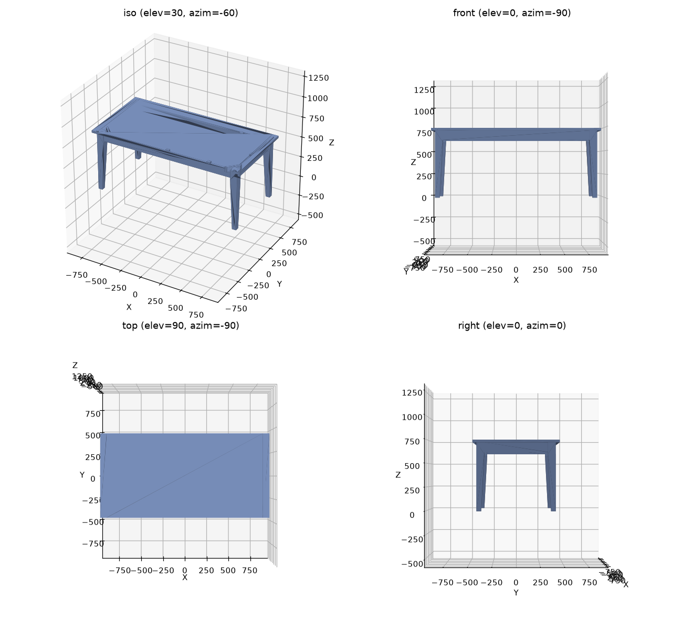

Shop Manual · Dining-table-6 · rev 2026-08-04
Shaker Dining Table for Six
Red oak, tapered legs, bolted corner-brace base, breadboard-ended top held by wooden buttons. Medium skill; the base knocks down flat.
- Finished size
- 1800 × 900 × 740 mm
- Seats
- 6 (2+2 sides, 1+1 ends)
- Knee clearance
- 614 mm
- Parts
- 23 (7 blank sizes)
- Shop time
- ≈ 2–3 weekends
Overview
The base is four tapered legs and four square-ended aprons pulled together by corner braces: a 45° hardwood block behind each corner, screwed to both aprons, with a hanger bolt from the leg passing through it. Tightening the nut draws the leg hard against the apron ends, and backing the nuts off drops the base flat for moving. The top is an edge-glued panel capped by breadboard ends riding a stopped tongue, and it attaches to the base with eight shop-made buttons that slide in grooves inside the aprons. Nothing restrains the top across its width, which is the point: 900 mm of solid oak moves roughly 9 mm through the year, and every detail below that looks fussy exists to let that happen without cracking.

Materials
| Stock | For | Rough quantity |
|---|---|---|
| 8/4 red oak | 4 legs (glue-up, milled to 80 sq) | ≈ 0.9 m of 200 mm-wide board |
| 5/4 red oak | top panel + 2 breadboards | ≈ 1.7 m² dressed to 26 |
| 4/4 red oak | 4 aprons | ≈ 0.5 m² dressed to 22 |
| Hardwood scrap | 8 buttons + 6 pegs | offcuts |
| Hardware | corner braces | 4 × M8 × 80 hanger bolt + washer + nut; 16 × #10 × 45 screws |
| Hardware | button screws | 8 × #8 × 32 mm |
| Consumables | glue-ups, finish | PVA glue; oil-varnish blend |
Buy 25–30% over the net areas for defect and grain selection. Tools assumed: jointer/planer (or hand equivalents), table saw, router or plow plane, mortiser or chisels, bandsaw or taper jig, cabinet scraper, clamps past 1000 mm.
Cut list
| Qty | Part | T × W × L (mm) | T × W × L (in) | Notes |
|---|---|---|---|---|
| 4 | Leg | 80 × 80 × 714 | 3-1/8 × 3-1/8 × 28-1/8 | 8/4 glue-up; bolt hole in the inner corner, then taper |
| 2 | Long apron | 22 × 100 × 1560 | 7/8 × 3-15/16 × 61-7/16 | square butt ends |
| 2 | Short apron | 22 × 100 × 660 | 7/8 × 3-15/16 × 26 | square butt ends |
| 4 | Corner brace | 22 × 60 × 190 | 7/8 × 2-3/8 × 7-1/2 | both ends cut 45°; bolt hole mid-height |
| 1 | Top panel | 26 × 900 × 1720 | 1 × 35-7/16 × 67-11/16 | glue-up; includes both 30 mm tongues |
| 2 | Breadboard | 26 × 70 × 900 | 1 × 2-3/4 × 35-7/16 | stopped groove matches tongue |
| 8 | Button | 20 × 36 × 40 | 13/16 × 1-7/16 × 1-9/16 | rabbeted 6 × 6 lip |
Build sequence
-
Mill all stock
Face-glue 8/4 pairs for the legs (oversize, ≈ 90 × 90 × 750), let them rest a day, then mill to 80 × 80 × 714. Dress apron stock to 22 × 100 and top stock to 26. Sticker everything overnight; re-check for movement before joinery. Choose the two best faces of each leg as the outer (show) faces; all joinery happens on the other two.
-
Drill the legs, before tapering
Each leg gets one hanger bolt in the inner corner (the arris between the two inner faces), centered 30 mm below the leg top, pointing at 45° into the corner. While the leg is still square: plane or file a small flat about 12 mm wide on that arris so the drill can start, then bore a ⌀5.5 × 40 pilot at 45° (a V-block cradle on the drill press holds the leg perfectly). Drive the M8 × 80 hanger bolts at assembly time with the double-nut trick, leaving about 35 mm proud.
Leg layout. One hanger bolt per leg, 45° into the flatted inner corner, 30 mm below the top; the taper starts 120 mm below the top, after drilling, and lands on a 48 mm foot. -
Taper the legs
Taper only the two inner faces, from 80 at 120 mm below the top down to 48 at the floor. Outer faces stay dead straight. Bandsaw just proud of the line and clean up with a jointer pass or hand plane; a table-saw taper jig works equally well. Break the four foot edges with a small chamfer so they don't splinter when the table is dragged.
-
Cut the aprons, make the braces
Cut aprons dead-square to final length: 1560 (long) and 660 (short); the ends butt the leg faces, so a clean crosscut is the whole joint. Plow the button groove: 6 × 6 mm on each apron's inner face, its top edge 12 mm below the apron's top edge, full length. Then the braces: 22 × 60 stock, both ends cut at 45° so the long face measures 186 and the short face 142. Drill a ⌀9 clearance hole mid-height, centered; add two countersunk screw pilots per end, square to each bearing face.
The corner joint. The brace bears on both apron inner faces and is screwed to them; the leg's hanger bolt crosses a 6 mm gap so the nut pulls the leg tight against the apron ends. -
Assemble the base, no glue
Drive the hanger bolts into the legs (double-nut, ~35 mm proud). On a flat surface, arrange the four aprons in their rectangle and screw a brace across each corner: two #10 × 45 screws per end, pilot first, brace tops flush with the apron tops. Stand a leg into each corner with its bolt through the brace hole, add washer and nut, and run all four finger-tight. Square the frame until the diagonals agree within 1 mm, then wrench-tighten evenly. The apron ends should sit dead flush against the leg faces with the 12 mm reveal all around; the base comes apart with a wrench whenever the table needs to move.
-
Glue the top panel, cut the tongues
Edge-glue 5/4 boards to just over 910 wide, alternating growth rings, then flatten and trim to 1660 × 900 × 26. Cut a tongue on each end: 12 thick × 30 long, centered in the thickness (7 mm shoulders), and stopped 30 mm from each edge; a router with an edge guide does this cleanly. The tongue is therefore 840 mm wide.
-
Fit the breadboards
Plow a matching stopped groove in each breadboard (12 wide × 31 deep, 840 long) and fit it to the tongue: it should tap on with a mallet and no slop. Attach each breadboard with glue on the center 100 mm only, then drawbore three 8 mm pegs: one center, two at ±300. The two outer peg holes through the tongue get elongated 5 mm side-to-side so the panel can swell and shrink past the fixed pegs.
Breadboard joint. Only the center is glued; the outer pegs pass through slots, so the 900 mm panel can move while the breadboard holds it flat. -
Make the buttons
From 20 mm scrap, make eight buttons 40 long × 36 deep overall: rabbet each to leave a 6 × 6 lip on one end. Shave each lip until, with the lip bottomed in the apron groove, the button body stops 1–2 mm shy of the apron face; that gap is what lets the screw pull the top down tight. Drill and countersink one screw hole per button.
Button attachment. The lip slides freely in the groove: the top is held down firmly yet can drift across the seasons. -
Attach the top
Set the top face-down on blankets and center the base on it upside down, with equal 40 mm overhang past the leg faces all around. Slip the buttons into the grooves: three per long apron (center and ±500), one centered per short apron. Pilot-drill and drive one #8 × 32 screw per button into the top. No glue anywhere in this step.
-
Finish
Break all edges. Sand or scrape to 180–220. For a dining top, a wiping oil-varnish blend (3–4 coats on top, 2 elsewhere) balances repairability and spill resistance; wax after a month if you like sheen. Finish the top's underside with the same number of coats as the face, because unequal moisture exchange is what cups tabletops.
Wood movement, the rules this design obeys
The top is never rigidly restrained across its width. Three details cooperate: buttons slide in grooves (no slotted screw holes needed), breadboards are glued only at the center with outer pegs in slots, and the tongue sits in a groove 1 mm deeper than it is long. Skip any one of them and a dry winter can split a 900 mm oak panel.
Expect the top's width to change ≈ 9 mm through the year. The breadboard ends will sit flush with the panel edges only at the moisture content you built at; that's normal, and the reason breadboards read as honest handwork.
Final checks
- Height 740 ± 2; top 1800 × 900; knee clearance 614 under the aprons.
- No rock on a flat floor: trim the proud foot, don't shim.
- Diagonals of the base within 1 mm.
- All four brace nuts wrench-tight; re-snug after the first month and after each season's humidity swing.
- Buttons snug but slideable by hand along the grooves.
- Both breadboard outer pegs verified to sit in slots, not round holes.
Source of truth: projects/Dining-table-6/dining-table.py. Rerun it to regenerate the cut list, STEP model, and renders after any dimension change.